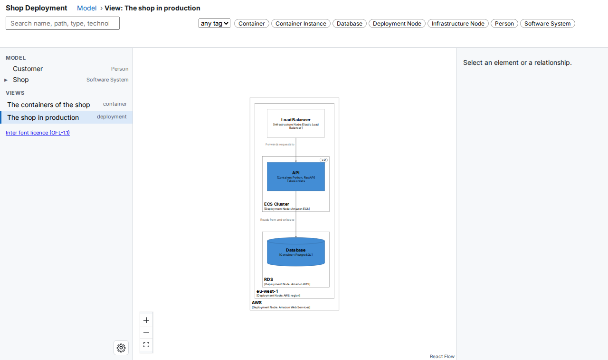
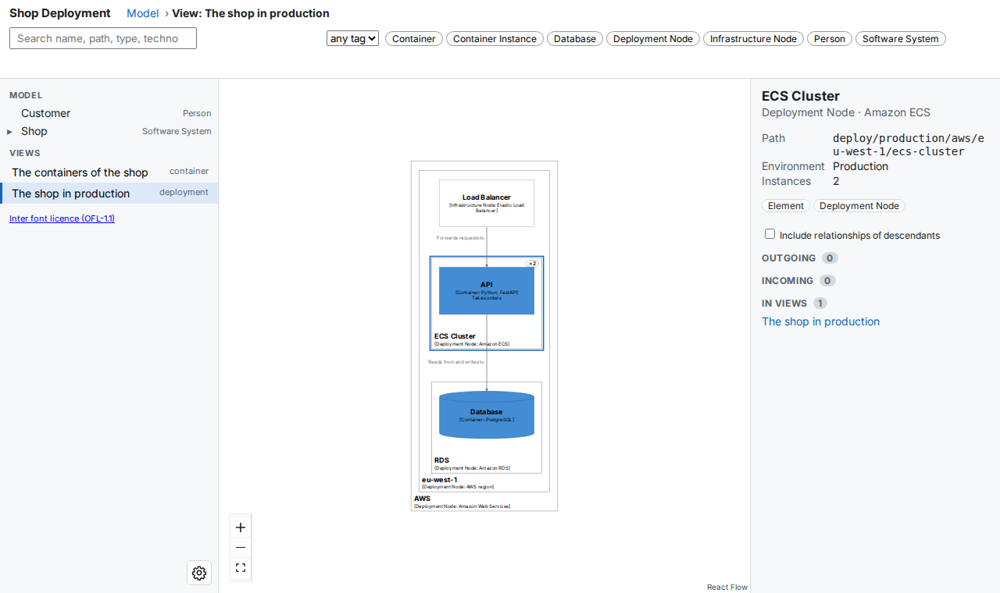
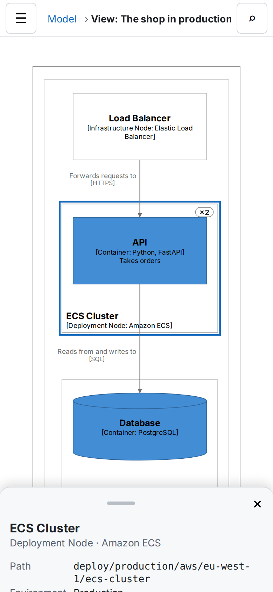

Deployment Views¶
A deployment view shows where the containers of your model run: which cloud, which region, which cluster or server, and how many copies of each. This page shows how to write one, build it, and read it in the viewer.
You need a model with containers (see Models) and buildzr with its buildzr command (see Installation).
1. Write the deployment model¶
A deployment model has three parts:
- a
DeploymentEnvironment, such as Production or Staging; DeploymentNodes inside it, nested as deep as you need: a cloud provider, a region, a cluster, a server;ContainerInstances (orSoftwareSystemInstances) inside the nodes: the containers that run there.InfrastructureNodes are the other things on a node, such as a load balancer or a DNS service.
Save this as workspaces/shop.py:
from buildzr.dsl import (
Workspace, Person, SoftwareSystem, Container,
DeploymentEnvironment, DeploymentNode, InfrastructureNode, ContainerInstance,
ContainerView, DeploymentView, StyleElements,
)
with Workspace('Shop Deployment') as w:
customer = Person('Customer')
with SoftwareSystem('Shop') as shop:
api = Container('API', technology='Python, FastAPI', description='Takes orders')
db = Container('Database', technology='PostgreSQL', tags={'Database'})
customer >> ("Buys from", "HTTPS") >> api
api >> ("Reads from and writes to", "SQL") >> db
with DeploymentEnvironment('Production') as production:
with DeploymentNode('AWS', technology='Amazon Web Services'):
with DeploymentNode('eu-west-1', technology='AWS region'):
lb = InfrastructureNode('Load Balancer', technology='Elastic Load Balancer')
with DeploymentNode('ECS Cluster', technology='Amazon ECS', instances='2'):
api_instance = ContainerInstance(api)
with DeploymentNode('RDS', technology='Amazon RDS'):
ContainerInstance(db)
lb >> ("Forwards requests to", "HTTPS") >> api_instance
ContainerView(software_system_selector=shop, key='shop-containers', description='The containers of the shop')
DeploymentView(environment=production, key='production', software_system_selector=shop,
description='The shop in production')
StyleElements(on=['Database'], shape='Cylinder')
instances='2'says the ECS Cluster runs two copies. It takes a number or a range such as'0..N'.- You do not write relationships between instances. The API container reads from the Database container, so buildzr gives the API instance the same relationship to the Database instance.
DeploymentViewtakes the environment object, not its name.software_system_selectorlimits the view to the instances of one software system; leave it out to show every instance of the environment.
2. Build and open the view¶
Build the workspace and serve it:
$ buildzr serve
built .buildzr/build/shop-deployment (11 elements, 3 relationships, 2 views; modelHash sha256:a464017ed5c8…)
Serving .buildzr/build at http://127.0.0.1:8000/ (Ctrl+C to stop)
http://127.0.0.1:8000/shop-deployment/
Workspace list at http://127.0.0.1:8000/_buildzr/v1/workspaces
The 11 elements are the person, the system, its two containers, and the seven deployment elements: four nodes, the load balancer and the two instances. Open the address and pick The shop in production under Views, or open http://127.0.0.1:8000/shop-deployment/#/v/production directly:

The deployment view of the Production environment. Each deployment node is a box around what runs on it, with its name and technology in the bottom-left corner.
What the view draws:
- Deployment nodes are boxes around what runs on them, nested as in the model. A node with more than one instance has a badge in its top-right corner:
×2. - Instances look like the container they are an instance of: the same name, technology, description and style. The Database instance is a cylinder because the Database container has the tag
Database. - Infrastructure nodes are boxes with
[Infrastructure Node: <technology>]. - Arrows are the relationships between the drawn elements. An arrow between two instances stands for the relationship between their containers.
A node with nothing inside it, no instance and no infrastructure node, is not in the view.
3. Select a node or an instance¶
Click a box to select it. The inspector on the right shows what the model says about it:

The ECS Cluster selected. The inspector shows its environment and its number of instances.
- For a deployment node, the inspector shows the environment and the number of instances.
- For an instance, it shows Instance of with a link to the container. Show in model opens the container in the model, where you can see what it is made of.
- Search and the tag filter work in deployment views as in the other views: the matching boxes stay bright and the others are dimmed.
The model tree on the left lists the people, software systems, containers and components only. To reach a deployment element, open its deployment view or search for it.
4. Find where a container runs¶
Select a software system or a container in the model, and the inspector lists Deployed on: one line for each deployment instance of it, grouped by environment. Each line is the path of deployment nodes the instance sits in, with the number of copies of the innermost node when it is more than one (AWS › eu-west-1 › ECS Cluster ×3).
- With one instance, the inspector has a Show deployment button. It opens the deployment view that draws the instance and selects the instance.
- With several, the button reads Deployments (3) and moves you to the list. Pick a line to open its view. When the view you are in already draws the instance, the viewer stays in it.
- With none, the list says “Not deployed in any environment.” and there is no button.
- An instance that no deployment view draws is listed, but it is not a link: its line says “(in no deployment view)”. This happens when the environment has no
DeploymentView, or when the view’ssoftware_system_selectorleaves the instance out.
The list only appears when the workspace has at least one DeploymentEnvironment. Back returns to the container, and the Instance of link in the inspector of an instance goes the other way. In an embedded viewer the same list works, and the history of the host page is not changed. On a phone, the button sits in the first lines of the sheet, and every line is at least 44 px high.
5. Link to a deployment element¶
Every deployment element has an id that starts with deploy/ and the environment: the ECS Cluster is deploy/production/aws/eu-west-1/ecs-cluster, and the API instance on it is deploy/production/aws/eu-west-1/ecs-cluster/api. An instance takes the name of its container.
To link to a selected element, add ?sel=<id> to the view’s address:
http://127.0.0.1:8000/shop-deployment/#/v/production?sel=deploy/production/aws/eu-west-1/ecs-cluster
The link #/m/<id> of a deployment element also works: it opens the first deployment view that shows the element. See Viewer links for every form of link.
6. On a phone¶
On a screen narrower than 768 px, the view fills the screen. Tap a box to select it; the inspector opens as a sheet at the bottom:

The same view on a phone, 390 px wide, with the ECS Cluster selected.
7. Ask the Model API¶
The Model API answers questions about deployment elements too. For example, this request lists the container instances and where they run (parent):
{
"apiVersion": "1",
"modelHash": "sha256:a464017ed5c8d6faffd1473e7f0653646c6c0b7d0522203cf1366b1ade2a23de",
"total": 2,
"items": [
{
"id": "deploy/production/aws/eu-west-1/ecs-cluster/api",
"name": "API",
"type": "ContainerInstance",
"parent": "deploy/production/aws/eu-west-1/ecs-cluster",
"description": "Takes orders",
"technology": "Python, FastAPI",
"tags": [
"Container Instance"
],
"childCount": 0,
"viewerUrl": "/shop-deployment/#/v/production?sel=deploy/production/aws/eu-west-1/ecs-cluster/api"
},
{
"id": "deploy/production/aws/eu-west-1/rds/database",
"name": "Database",
"type": "ContainerInstance",
"parent": "deploy/production/aws/eu-west-1/rds",
"description": null,
"technology": "PostgreSQL",
"tags": [
"Container Instance"
],
"childCount": 0,
"viewerUrl": "/shop-deployment/#/v/production?sel=deploy/production/aws/eu-west-1/rds/database"
}
],
"next": null,
"truncated": false
}
GET /shop-deployment/api/v1/views?environment=production lists the deployment views of Production. See Deployment elements.
Several environments¶
Write one DeploymentEnvironment per environment and one DeploymentView for each. Every environment gets its own ids: deploy/staging/... and deploy/production/.... Two environments whose names differ only in case or punctuation get -2 on the second one, for example deploy/prod-2/....
Deployment groups (DeploymentGroup) decide which instances get the relationships of their containers; the view does not draw them as boxes.